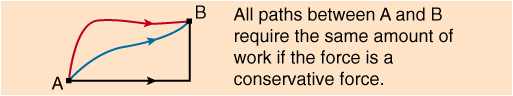

CONSERVATIVE FORCES

"In examinations those who do not
wish to
know
ask questions of those who cannot tell”
Walter Raleigh – Laughter
from a Cloud (1923)

- Definition: A force is conservative if the work done by the force on a particle that moves through any round trip is zero.
Thus
for a round trip, by the work energy theorem, the change in
kinetic
energy must
be zero
- For conservative forces the work done by the force depends only on the initial and final states. It is independent of the path followed between these states.

- Examples of conservative forces are
o
Force
of gravity (
o Restoring force in a stretched or compressed spring (Hooke’s Law)
o Force between electrical charges (Coulomb’s Law)
- Work done by
non-conservative forces
is not path
independent. Note that the
frictional
force is non-conservative.

"Cauliflower
is no more than cabbage with a college education”
Mark
Twain
– Puddin’head

Dr. C. L. Davis
Physics Department
University of
email: c.l.davis@louisville.edu